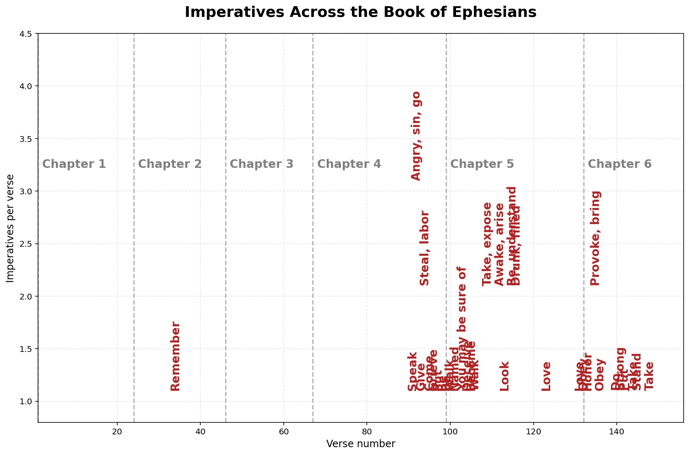
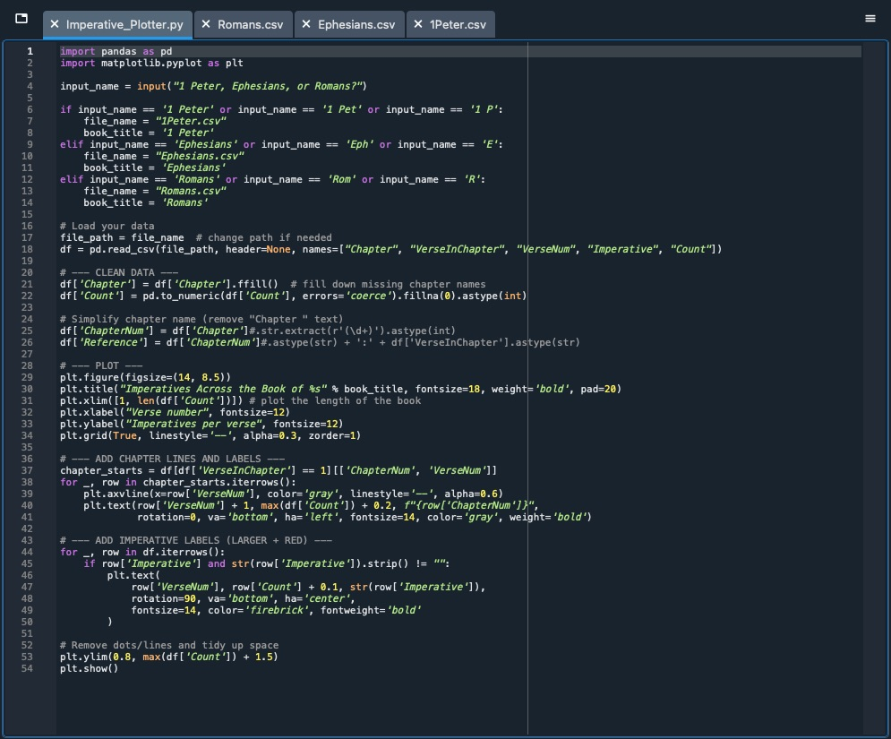

Sometimes when we read the Bible, it can be tricky to understand what to do with its contents. A simple yet dependable way to approach the Scriptures is by looking for imperatives.
The imperative mood is when a verb expresses "a command, intention, exhortation, or polite request" (Logos Bible Software). This means imperatives can be an excellent starting point for knowing what the Biblical authors wanted their audienced to do with their writings! And especially, imperatives often give clues as to what the overall sections of Scripture are communicating to the reader.
Here's an example: 1 Peter 2:13 say's, "Be subject for the Lord’s sake to every human institution, whether it be to the emperor as supreme, or to governors..." The big idea of this passage (and much of the overall theme of 1 Peter) is found right there in the imperative: "Be subject" (or, subject yourselves). It's Peter's desire that the recipients of his letter subject themselves to authorities under all trials and forms of persecution, not because he desires a weak people, but because it shows that their hope is not in earthly institutions. Instead, it is in God... therefore, be subject to the human institutions, rather than acting against them.
Why the Imperative Plotter Matters
When I use Logos Bible Software, I take advantage of the Visual Filter function. It allows me to highlight every imperative in the entire Bible, making interpretation much quicker. But when studying Ephesians, I noticed something.
Other books (like 1 Peter) had imperatives scattered evenly throughout the letter -- you can see that if you run my 1 Peter plot on this code. But Ephesians was different. It had a large clump of imperatives towards the end of the book, as most Pauline epistles do, but nearly none for the first 4 chapters.
As I took a closer look, I found one imperative: "Remember." This is now what I call the Controlling Imperative of Ephesians. Rememeber. And specifically, as you find that imperative in Ephesians 2:11, you realize what the entire theme of the first 4 chapters of the epistle is all about: Remember what Christ did. You were dead and He made you alive.
This is a powerful application! At face value is doesn't seem like a S.M.A.R.T. application... its not "memorize 2 verse by next week" or "pray twice each day." Instead, its an application to remember -- to live with Christ and His sacrifice on your mind. Its a reminder that before we can do, do, do for God, we must realize His Gospel, what He did for us. The Gospel is not about obeying imperatives -- its about remembering what Christ did for you and for me.
So, download this code (and the necessary packages) or just take a look at the plots I've included. I'll continue to add more over time. But I hope that you can study them and realize a truth that you haven't noticed before in Scriptures that you might be familiar with. Take time to be curious and creative and look at the Bible with a new perspective every once and a while. I hope this helps!

